Reverse dependency checks for everyone
Automate R integration testing at cloud scale
2025-12-24
About me
Hi, I’m Nan Xiao (@nanxstats)!
Passionate about writing fast and correct code + better developer tooling
- Learned from wholesome frequentist and Bayesian statisticians
- Creator of ggsci, pkglite, tinytopics, and other R, Python, TypeScript, Rust packages
- Work on intersection of statistical methodology and research software engineering
Outline
- The problem
- Scale challenges
- Solution: revdeprun
- Validation: data.table
- Lessons learned
The problem
What makes R unique?
- 23,000+ packages on CRAN today
- The CRAN social contract: We don’t break downstream code
- Any upstream package updates must check that downstream packages still work
Package authors should check following CRAN repository policy:
For a package update, please check that any packages depending on this one still pass
R CMD check: it is especially expected that you will have checked your own packages.
CRAN will check independently after update submission:
package ggsci_4.2.0.tar.gz has been auto-processed and is pending an automated reverse dependency check. This service will typically respond to you within the next day. For technical reasons you may receive a second copy of this message when a team member triggers a new check.
Why this matters
Goal: A shattered ecosystem helps no one, so we need integration testing at the ecosystem level. All packages should always work together out of the box.
- R: CRAN tests ensure your update won’t break downstream packages
- Python: must use virtual environments to lock and isolate dependencies
Solution: invest developer time to save user time
- For a user,
library(ggplot2)just works - For a maintainer, making that happen can be terrifyingly laborious
The process
- Find all reverse dependencies for your package
- Run
R CMD checkon each one, twice:- Once with the current CRAN version of your package
- Once with your updated version
- Compare results. Ensure your changes don’t break them
Simple in theory. Complex in practice:
- Install R and sysdeps: pandoc, Quarto, TeX
- Install dependencies for checking revdeps and their sysdeps
- Transient network errors and random failures
- Check results diff comparison threshold
Scale challenges
The scale problem
- Small scale: use
tools,revdepcheck, orxfun::rev_check()manually - Large scale: hundreds or thousands of packages to check
You need:
- High CPU count (embarrassingly parallel workload)
- Disposable environments (running untrusted code)
- Automated setup (manual setup is tedious)
- Binary packages (compiling from source takes forever)
Existing solutions
revdepcheck: great for local checks of 50 revdeps on Windows/macOSrevdepcheck.extras: workflow and CLI tooling improvementsxfun::rev_check(): fast parallel checking on Windows/macOS
Known limitations:
- Can’t use binary repos for Linux
- System dependencies handling varies
- Cloud check is either a private feature or limited to GitHub Actions runners
Each solves part of the problem.
None solves the whole problem for cloud-scale checking for everyone.
Build the right tool for the job
Pro tip: Seek early product-market fit signals from the right audience.
I benefited from sharing the news on the r-package-devel mailing list.

Solution: revdeprun
Design goals
Run one command, get coffee, watch it work.
- Target audience: CRAN package maintainers with many reverse dependencies
- Target environment: disposable Ubuntu cloud instances with high CPU count
- Easy setup: no manual R installation, no complex configuration
The solution
- Use
pakto install binary dependencies from Posit Public Package Manager (P3M) - Use
xfun::rev_check()for parallel checking - Wrap in a Rust CLI that automates everything
- One command from fresh Ubuntu to complete results
Workflow
Phase 1: Environment setup and dependency installation

Phase 2: Parallel checking of all reverse dependencies

What it does
- Installs the current release version of R for Ubuntu
- Discovers all reverse dependencies from CRAN metadata
- Installs system requirements for all reverse dependencies
- Pre-installs binary dependencies from P3M into
revdep/library/ - Runs
xfun::rev_check()with all available CPU cores - Generates summary reports for packages with check diffs
Get started
Fresh Ubuntu instance. Four commands:
That’s it!
Command-line options
# Basic usage
revdeprun https://github.com/USER/PACKAGE.git
# Specify R version
revdeprun --r-version devel https://github.com/USER/PACKAGE.git
# Control parallelism
revdeprun --num-workers 48 https://github.com/USER/PACKAGE.git
# Use local directory
revdeprun ~/workspace/my-package
# Use source tarball
revdeprun ~/packages/mypackage_1.2.3.tar.gz
# Custom workspace
revdeprun --work-dir /data/workspace https://github.com/USER/PACKAGE.gitWhy Rust CLI?
- Shell scripts get messy fast. No proper error handling, testing, or distribution.
- R or Python packages may create circular or complicated runtime situations.
Rust gives you separation of concerns:
- Single static binary, no runtime dependencies
- Proper error handling, testing, and cross-platform distribution
Key crates
anyhow: error handling with contextclap: command-line argument parsingindicatif: progress bars for long-running operationsreqwest: HTTP client for downloading packages and metadataserde/serde_json: JSON parsing for package metadataxshell: cross-platform scripting environment in Rust
Validation: data.table
Why data.table?
- One of the most depended upon packages on CRAN (rank 15)
- 1,732 reverse dependencies at the time of testing
- The maintainers were kind enough to try revdeprun and report their experience
- Perfect test case for cloud-scale checking
The instance
Cloud instance specs:
- 256 CPU cores (AMD EPYC 9845, launched Q4 2024)
- 512 GB DDR5 RAM
- 5 TB storage
- Ubuntu 24.04 LTS
- Cost: $8.64 per hour
Timeline: Setup phase
00:00:00 - Started. Setting up R and installing system dependencies.
00:14:00 - Started downloading 4,430 packages required for checking.
00:23:00 - Started installing packages.
00:49:00 - xfun::rev_check() started preparation.
00:53:00 - Started downloading all 1,732 reverse dependencies from source.
00:56:00 - Setup complete. Time for the real work.
Timeline: Checking phase
00:56:00 - Started checking all 1,732 packages, twice.
01:28:00 - Halfway done. 866 packages remaining.
02:44:00 - Finished. 35 packages reported check diffs.

Results
- Total time: 2 hours 44 minutes
- Total cost:
$24 - Setup time: 56 minutes
- Checking time: 1 hour 48 minutes
Lessons learned
Developer tools matter
- Good developer tools make developers productive.
- Automation saves time. Time saves money. Money enables more development.
- The R community has excellent package development tools. It can be better.
- Launch early, iterate fast.
Infrastructures matter
- Installing thousands of packages from source would take days
- Posit Public Package Manager (P3M) provides pre-compiled binaries for Linux
pakcan install these binaries in minutes instead of hours- This is what makes cloud-scale checking practical
Complexity is real
- Multiple people tried solving this problem.
- Each solution tackles part of it.
- If many smart people couldn’t solve it completely, it’s genuinely hard.
- The devil is in the details: system dependencies, binary repos, parallel checking.
What to optimize
- AI writes code fast. We need to verify it even faster.
- Not: how do you build something? But: what should you build?
- Choose problems that matter. Build tools that save time at scale.
- Know what’s out there. Try everything. Start building.
Future directions
- What about packages with 10,000+ reverse dependencies?
- Can we cut setup below 30 minutes by using r2u or rv?
- Can we do nightly runs via CI/CD?
- Can we improve reporting across different nightly runs?
These are open questions. Contributions welcome.
Questions?
Resources
revdeprun on GitHub
https://github.com/nanxstats/revdeprun
revdeprun on crates.io
https://crates.io/crates/revdeprun
Documentation
Blog posts
Announcing revdeprun: https://nanx.me/blog/post/revdeprun/
First data.table speedrun: https://nanx.me/blog/post/revdep-speedrun/
Second data.table speedrun: https://nanx.me/blog/post/revdeprun-2-1-0/